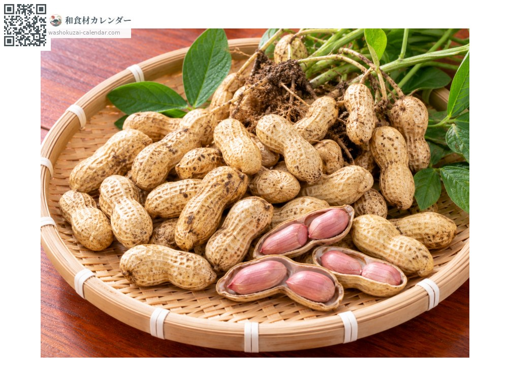
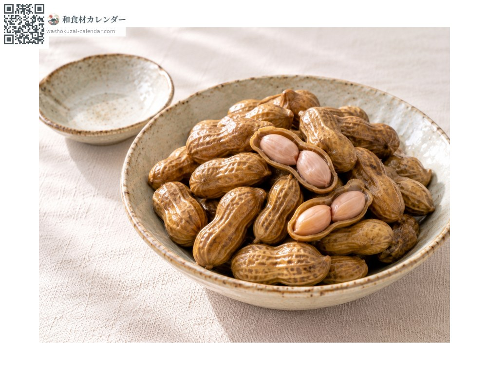
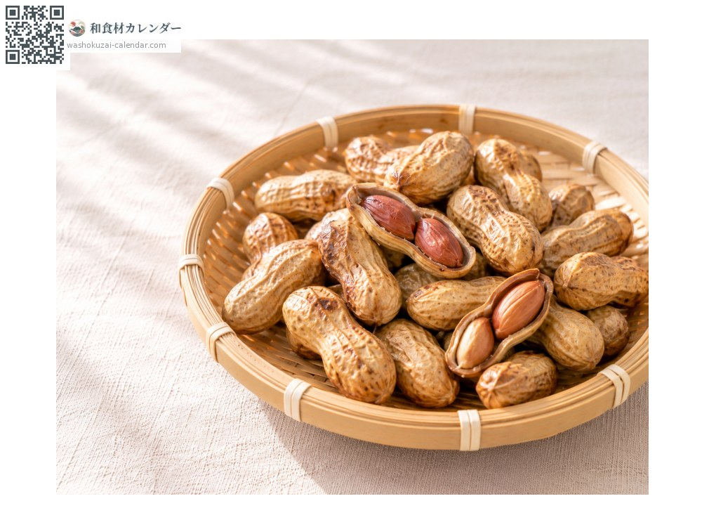
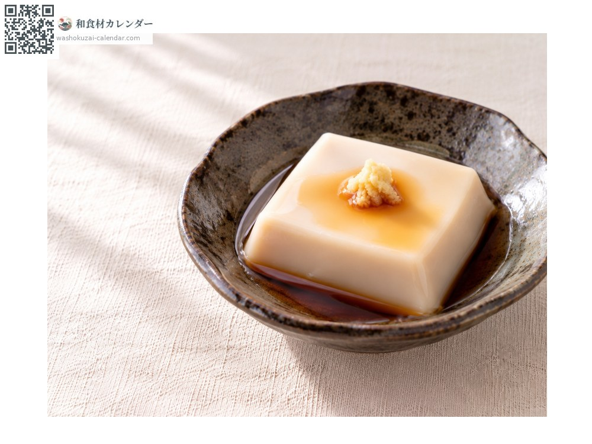
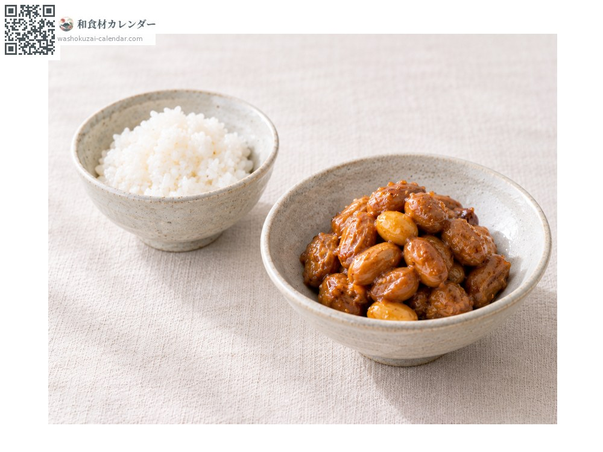

Fresh peanuts
落花生 らっかせい rakkasei
Also known asrakkasei
At its best in Sep, Oct

When it is at its best
In seasonAvailable
How to cook

Salt-boiled
Boiled in the shell in salted water for about 40 minutes; only possible with fresh peanuts.

Roasted in the shell
Dried, then slowly roasted in the shell.

Jimami tofu
An Okinawan dish of peanut milk set with kudzu starch.

Peanut miso
Roasted peanuts coated in miso and sugar.
How to choose
Clean, pale, plump shells. Avoid any that have darkened.
Storage
Fresh peanuts spoil easily, so boil them the same day. Boiled peanuts freeze well.
Main areas
Good to know
The Japanese name means "the flower falls and bears fruit": after flowering, the stalk bends down into the soil and the pods form underground. Chiba grows about 80 per cent of Japan's crop. Fresh peanuts are only available for a short time from around August to October, just after digging; boiled, they turn soft and floury like chestnuts.